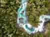
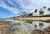
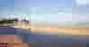
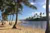
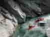
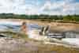

Passeio 01 - Praia do Forte


Nosso passeio no roteiro 01 inclui conhecer a Praia
do Forte, um lugar encantador, com muitas atrações
e belas praias.
A Praia do Forte é um charmoso distrito de pescadores
no município de Mata de São João, na Bahia, famoso
por suas piscinas naturais, pelo Projeto Tamar e
pela vibrante Alameda do Sol.
Localizada a cerca de 55 km do aeroporto de Salvador,
combina ecoturismo, natureza e infraestrutura
sofisticada.
Passeio 02 - Imbassaí


No passeio do roteiro 02 você vai conhecer Imbassaí,
suas praias e corredeiras.
Famosa pelo encontro do rio com o mar, Imbassaí fica
em Mata de São João, no litoral norte da Bahia,
a cerca de 65 km de Salvador.
O local destaca-se pelas águas calmas de seus rios,
pelas dunas de areia branca e pelo clima rústico
e sossegado.
Passeio 03 - Porto de Sauípe


No passeio do roteiro 03 você vai conhecer Porto de
Sauípe, um charmoso e romântico vilarejo de pescadores e distrito
do município de Entre Rios.
Situado no litoral norte da Bahia, encontra-se a
aproximadamente 86 a 90 km de Salvador.
O destino é famoso pelo belo encontro do Rio Sauípe
com o mar, na região da Barra, pelas praias cercadas
de coqueiros e pela proximidade com o complexo da
Costa do Sauípe.